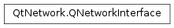

QNetworkInterface¶
Synopsis¶
Functions¶
- def
addressEntries() - def
flags() - def
hardwareAddress() - def
humanReadableName() - def
index() - def
isValid() - def
maximumTransmissionUnit() - def
name() - def
swap(other) - def
type()
Static functions¶
- def
allAddresses() - def
allInterfaces() - def
interfaceFromIndex(index) - def
interfaceFromName(name) - def
interfaceIndexFromName(name) - def
interfaceNameFromIndex(index)
Detailed Description¶
The
PySide2.QtNetwork.QNetworkInterfaceclass provides a listing of the host’s IP addresses and network interfaces.
PySide2.QtNetwork.QNetworkInterfacerepresents one network interface attached to the host where the program is being run. Each network interface may contain zero or more IP addresses, each of which is optionally associated with a netmask and/or a broadcast address. The list of such trios can be obtained withPySide2.QtNetwork.QNetworkInterface.addressEntries(). Alternatively, when the netmask or the broadcast addresses or other information aren’t necessary, use thePySide2.QtNetwork.QNetworkInterface.allAddresses()convenience function to obtain just the IP addresses of the active interfaces.
PySide2.QtNetwork.QNetworkInterfacealso reports the interface’s hardware address withPySide2.QtNetwork.QNetworkInterface.hardwareAddress().Not all operating systems support reporting all features. Only the IPv4 addresses are guaranteed to be listed by this class in all platforms. In particular, IPv6 address listing is only supported on Windows, Linux, macOS and the BSDs.
-
class
PySide2.QtNetwork.QNetworkInterface¶ -
class
PySide2.QtNetwork.QNetworkInterface(other) Parameters: other – PySide2.QtNetwork.QNetworkInterfaceConstructs an empty network interface object.
Creates a copy of the
PySide2.QtNetwork.QNetworkInterfaceobject contained inother.
-
PySide2.QtNetwork.QNetworkInterface.InterfaceFlag¶ Specifies the flags associated with this network interface. The possible values are:
Constant Description QNetworkInterface.IsUp the network interface is active QNetworkInterface.IsRunning the network interface has resources allocated QNetworkInterface.CanBroadcast the network interface works in broadcast mode QNetworkInterface.IsLoopBack the network interface is a loopback interface: that is, it’s a virtual interface whose destination is the host computer itself QNetworkInterface.IsPointToPoint the network interface is a point-to-point interface: that is, there is one, single other address that can be directly reached by it. QNetworkInterface.CanMulticast the network interface supports multicasting Note that one network interface cannot be both broadcast-based and point-to-point.
-
PySide2.QtNetwork.QNetworkInterface.InterfaceType¶ Specifies the type of hardware (PHY layer, OSI level 1) this interface is, if it could be determined. Interface types that are not among those listed below will generally be listed as Unknown, though future versions of Qt may add new enumeration values.
The possible values are:
Constant Description QNetworkInterface.Unknown The interface type could not be determined or is not one of the other listed types. QNetworkInterface.Loopback The virtual loopback interface, which is assigned the loopback IP addresses (127.0.0.1, ::1). QNetworkInterface.Virtual A type of interface determined to be virtual, but not any of the other possible types. For example, tunnel interfaces are (currently) detected as virtual ones. QNetworkInterface.Ethernet IEEE 802.3 Ethernet interfaces, though on many systems other types of IEEE 802 interfaces may also be detected as Ethernet (especially Wi-Fi). QNetworkInterface.Wifi IEEE 802.11 Wi-Fi interfaces. Note that on some systems, PySide2.QtNetwork.QNetworkInterfacemay be unable to distinguish regular Ethernet from Wi-Fi and will not return this enum value.QNetworkInterface.Ieee80211 An alias for WiFi. QNetworkInterface.CanBus ISO 11898 Controller Area Network bus interfaces, usually found on automotive systems. QNetworkInterface.Fddi ANSI X3T12 Fiber Distributed Data Interface, a local area network over optical fibers. QNetworkInterface.Ppp Point-to-Point Protocol interfaces, establishing a direct connection between two nodes over a lower transport layer (often serial over radio or physical line). QNetworkInterface.Slip Serial Line Internet Protocol interfaces. QNetworkInterface.Phonet Interfaces using the Linux Phonet socket family, for communication with cellular modems. See the Linux kernel documentation for more information. QNetworkInterface.Ieee802154 IEEE 802.15.4 Personal Area Network interfaces, other than 6LoWPAN (see below). QNetworkInterface.SixLoWPAN 6LoWPAN (IPv6 over Low-power Wireless Personal Area Networks) interfaces, which operate on IEEE 802.15.4 PHY, but have specific header compression schemes for IPv6 and UDP. This type of interface is often used for mesh networking. QNetworkInterface.Ieee80216 IEEE 802.16 Wireless Metropolitan Area Network, also known under the commercial name “WiMAX”. QNetworkInterface.Ieee1394 IEEE 1394 interfaces (a.k.a. “FireWire”).
Note
This enum was introduced in Qt 5.11.
-
PySide2.QtNetwork.QNetworkInterface.addressEntries()¶ Return type: Returns the list of IP addresses that this interface possesses along with their associated netmasks and broadcast addresses.
If the netmask or broadcast address or other information is not necessary, you can call the
PySide2.QtNetwork.QNetworkInterface.allAddresses()function to obtain just the IP addresses of the active interfaces.
-
static
PySide2.QtNetwork.QNetworkInterface.allAddresses()¶ Return type: This convenience function returns all IP addresses found on the host machine. It is equivalent to calling
PySide2.QtNetwork.QNetworkInterface.addressEntries()on all the objects returned byPySide2.QtNetwork.QNetworkInterface.allInterfaces()that are in theQNetworkInterface.IsUpstate to obtain lists ofPySide2.QtNetwork.QNetworkAddressEntryobjects then callingQNetworkAddressEntry.ip()on each of these.
-
static
PySide2.QtNetwork.QNetworkInterface.allInterfaces()¶ Return type: Returns a listing of all the network interfaces found on the host machine. In case of failure it returns a list with zero elements.
-
PySide2.QtNetwork.QNetworkInterface.flags()¶ Return type: PySide2.QtNetwork.QNetworkInterface.InterfaceFlagsReturns the flags associated with this network interface.
-
PySide2.QtNetwork.QNetworkInterface.hardwareAddress()¶ Return type: unicode Returns the low-level hardware address for this interface. On Ethernet interfaces, this will be a MAC address in string representation, separated by colons.
Other interface types may have other types of hardware addresses. Implementations should not depend on this function returning a valid MAC address.
-
PySide2.QtNetwork.QNetworkInterface.humanReadableName()¶ Return type: unicode Returns the human-readable name of this network interface on Windows, such as “Local Area Connection”, if the name could be determined. If it couldn’t, this function returns the same as
PySide2.QtNetwork.QNetworkInterface.name(). The human-readable name is a name that the user can modify in the Windows Control Panel, so it may change during the execution of the program.On Unix, this function currently always returns the same as
PySide2.QtNetwork.QNetworkInterface.name(), since Unix systems don’t store a configuration for human-readable names.
-
PySide2.QtNetwork.QNetworkInterface.index()¶ Return type: PySide2.QtCore.intReturns the interface system index, if known. This is an integer assigned by the operating system to identify this interface and it generally doesn’t change. It matches the scope ID field in IPv6 addresses.
If the index isn’t known, this function returns 0.
-
static
PySide2.QtNetwork.QNetworkInterface.interfaceFromIndex(index)¶ Parameters: index – PySide2.QtCore.intReturn type: PySide2.QtNetwork.QNetworkInterfaceReturns a
PySide2.QtNetwork.QNetworkInterfaceobject for the interface whose internal ID isindex. Network interfaces have a unique identifier called the “interface index” to distinguish it from other interfaces on the system. Often, this value is assigned progressively and interfaces being removed and then added again get a different value every time.This index is also found in the IPv6 address’ scope ID field.
-
static
PySide2.QtNetwork.QNetworkInterface.interfaceFromName(name)¶ Parameters: name – unicode Return type: PySide2.QtNetwork.QNetworkInterfaceReturns a
PySide2.QtNetwork.QNetworkInterfaceobject for the interface namedname. If no such interface exists, this function returns an invalidPySide2.QtNetwork.QNetworkInterfaceobject.The string
namemay be either an actual interface name (such as “eth0” or “en1”) or an interface index in string form (“1”, “2”, etc.).
-
static
PySide2.QtNetwork.QNetworkInterface.interfaceIndexFromName(name)¶ Parameters: name – unicode Return type: PySide2.QtCore.intReturns the index of the interface whose name is
nameor 0 if there is no interface with that name. This function should produce the same result as the following code, but will probably execute faster.QNetworkInterface::interfaceFromName(name).index()
-
static
PySide2.QtNetwork.QNetworkInterface.interfaceNameFromIndex(index)¶ Parameters: index – PySide2.QtCore.intReturn type: unicode Returns the name of the interface whose index is
indexor an empty string if there is no interface with that index. This function should produce the same result as the following code, but will probably execute faster.QNetworkInterface::interfaceFromIndex(index).name()
-
PySide2.QtNetwork.QNetworkInterface.isValid()¶ Return type: PySide2.QtCore.boolReturns
trueif thisPySide2.QtNetwork.QNetworkInterfaceobject contains valid information about a network interface.
-
PySide2.QtNetwork.QNetworkInterface.maximumTransmissionUnit()¶ Return type: PySide2.QtCore.intReturns the maximum transmission unit on this interface, if known, or 0 otherwise.
The maximum transmission unit is the largest packet that may be sent on this interface without incurring link-level fragmentation. Applications may use this value to calculate the size of the payload that will fit an unfragmented UDP datagram. Remember to subtract the sizes of headers used in your communication over the interface, e.g. TCP (20 bytes) or UDP (12), IPv4 (20) or IPv6 (40, absent some form of header compression), when computing how big a payload you can transmit. Also note that the MTU along the full path (the Path MTU) to the destination may be smaller than the interface’s MTU.
See also
-
PySide2.QtNetwork.QNetworkInterface.name()¶ Return type: unicode Returns the name of this network interface. On Unix systems, this is a string containing the type of the interface and optionally a sequence number, such as “eth0”, “lo” or “pcn0”. On Windows, it’s an internal ID that cannot be changed by the user.
-
PySide2.QtNetwork.QNetworkInterface.swap(other)¶ Parameters: other – PySide2.QtNetwork.QNetworkInterfaceSwaps this network interface instance with
other. This function is very fast and never fails.
-
PySide2.QtNetwork.QNetworkInterface.type()¶ Return type: PySide2.QtNetwork.QNetworkInterface.InterfaceTypeReturns the type of this interface, if it could be determined. If it could not be determined, this function returns
QNetworkInterface.Unknown.
© 2018 The Qt Company Ltd. Documentation contributions included herein are the copyrights of their respective owners. The documentation provided herein is licensed under the terms of the GNU Free Documentation License version 1.3 as published by the Free Software Foundation. Qt and respective logos are trademarks of The Qt Company Ltd. in Finland and/or other countries worldwide. All other trademarks are property of their respective owners.